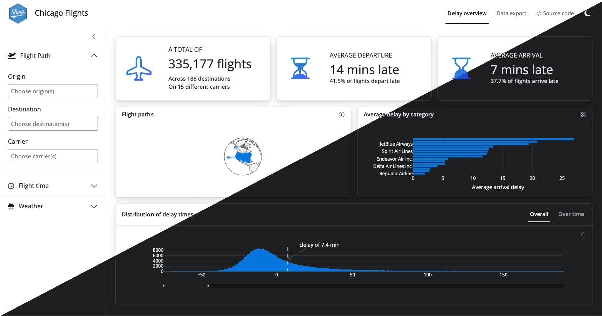

install.packages(c("shiny", "bslib"))

The Shiny team is pleased to announce another round of updates for 13 different R packages, including shiny and bslib. There are too many improvements to cover in a single post, but we’d like to highlight some of the more notable additions. For a detailed list of changes, be sure to check out the release notes section of this post.
bslib brings modern Bootstrap versions and new user layouts and inputs to Shiny, the web framework for data scientists. Install the latest versions of shiny and bslib from CRAN with:
In this post, we’ll cover three main topics: the new shiny look, what’s new in shinylive and a long-awaited update to selectize.js in shiny.
A shiny new look
In our last post, we previewed a new look for bslib-powered UIs, which is designed with dashboards in mind. This release of bslib adds more polish to this new “preset” theme and makes it the default for bslib powered UIs.
To use the new layouts, simply create an app using any page_*() function in bslib for the UI. Here’s a very simple template you can use to get started. Notice that we’ve used shinylive to make this example interactive – the entire app is running in your browser, no server required! You can even edit the app right here in this post and see the changes live when you press the play button. We’ll talk more about shinylive later in this post.
We’re calling this new look the shiny “preset” theme, because it’s a great place to start building your own theme. Remember, you can always customize the preset by passing additional arguments to bs_theme(). You can even switch back to the default preset = "bootstrap" look by using the following theme value in your page_*() function1:
# use default Bootstrap styles
theme = bs_theme(preset = "bootstrap")The new shiny preset is designed with dashboards in mind. Here’s a more complete example using a full dashboard app (source, demo) for exploring flight data from Chicago. Toggle between the new and old look to see what’s changed with this release.
The rest of this section will explore a few highlights of the new default look, including:
- New page-level styling
- Dark mode support
- Improved
value_box()styling - Refreshed Shiny UI (inputs, modals, notifications, and more)
Quarto and PyShiny dashboards
Dashboards are coming to Quarto!
The new Quarto dashboard format, as well as newer PyShiny components, are built on the same foundation as bslib. Thus, the concepts you’ll learn while building dashboards with bslib should also largely apply there as well.
Page-level styling
As we noted above, the new shiny preset is design with dashboards in mind, but it will make any shiny app look great. The new default look is designed to be light and minimal, with a white navbar and white sidebar framing the dashboard area. Cards are also entirely white, with subtle depth created by drop shadows under the cards. Value boxes provide colorful accents, as will the plots you add to showcase your data.
Here’s an example taken straight from the getting started guide for bslib dashboards.
To achieve the full dashboard effect, though, you have opt into the light gray background by adding class = "bslib-page-dashboard" to your page_sidebar() or the nav_panel() items in your page_navbar(). This class enables a few additional features, namely adding a soft gray background to the main content area under cards and value boxes that help them stand out. You can also add the class directly to page_fillable() or page() to get the same effect in apps with custom layouts.
library(shiny)
library(bslib)
ui <- page_fillable(
title = "My Dashboard",
class = "bslib-page-dashboard",
# ... custom layout and dashboard content ...
)Built-in dark mode support ‚òÄÔ∏è üåô
This release of bslib brings built-in dark mode support to any Shiny app that uses bs_theme(), thanks to Bootstrap 5.3’s new client-side color mode feature! To enable dark mode in your app, add input_dark_mode() somewhere in your UI. In the example below, we’ve put in the navbar.
For the best results, make sure you have the latest version of shiny. Dark mode works with nearly any Bootstrap theme created with bs_theme(), including the new shiny preset, but it tends to work best when the theme is designed around light mode first. For matching plots and widgets to the current color mode, you can use thematic to automatically style plots or shiny::getCurrentOutputInfo() to manually set the colors of your R outputs.
By default, the color mode is picked from the user’s system settings – i.e. choosing dark mode if their system is also in dark mode – but you can choose the initial color mode via the mode argument. If you give input_dark_mode() an id, it reports the current color mode as either "light" or "dark".
library(shiny)
library(bslib)
ui <- page_navbar(
title = "Dashboard",
nav_spacer(), # push nav items to the right
nav_panel("Page 1", "Dashboard content"),
nav_item(
input_dark_mode(id = "dark_mode", mode = "light")
)
)
server <- function(input, output, server) {
observeEvent(input$dark_mode, {
if (input$dark_mode == "dark") {
showNotification("Welcome to the dark side!")
}
})
}
shinyApp(ui, server)Value box styling
The new default look includes improved styling for value_box() outputs, which are commonly used in dashboards. We’re also excited to announce a new Build-a-Box app to help build and explore value boxes themes and options in a live Shiny app.
Use the tabs below to learn more about several new features and themes supported by value_box().
Showcase Bottom with Text-Color Theme
The new showcase_layout = "bottom" option is perfect for sparkline-style plots that fill the value box width and expand into full screen plots when the user clicks the expand button (enabled by full_screen = TRUE). See the Expandable sparklines section of the value box article for an example of how to create these plots with plotly and bslib.
This example also highlights the text-{color} value box themes that set the color of the text to a Bootstrap color.
layout_columns(
value_box(
title = "Engagement rate",
value = "3.8%",
theme = "text-indigo",
showcase = plotOutput("plot_engagement"),
showcase_layout = "bottom",
full_screen = TRUE
),
value_box(
title = "Project Funding",
value = "$2,805",
theme = "text-success",
showcase = plotOutput("plot_funding"),
showcase_layout = "bottom",
full_screen = TRUE
),
value_box(
title = "Employee satisfaction",
value = "92.3%",
theme = "text-blue",
showcase = plotOutput("plot_satisfaction"),
showcase_layout = "bottom",
full_screen = TRUE
)
)Showcase Left Center with Gradient Icons
This example uses the default value box styles in the new shiny preset. Icons receive a subtle gradient and are placed to the left of the value box content thanks to the default showcase_layout = "left center".
layout_columns(
value_box(
title = "API Response Time",
value = "150ms",
showcase = bsicons::bs_icon("arrow-left-square-fill")
),
value_box(
title = "Revenue growth",
value = "+15.2%",
showcase = bsicons::bs_icon("arrow-up-circle-fill")
),
value_box(
title = "Market share",
value = "42%",
showcase = fontawesome::fa_i("magnifying-glass-dollar")
)
)Showcase Top Right with Gradient Backgrounds
This example uses theme = "bg-gradient-{from}-{to}" for value boxes with vibrant gradient backgrounds. You can use any of the Bootstrap color names for the from or to colors. showcase_layout = "top right" places the icon in the top right corner of the value box.
layout_columns(
value_box(
title = "Average wait",
value = "4 minutes",
theme = "bg-gradient-purple-cyan",
showcase = bsicons::bs_icon("stopwatch"),
showcase_layout = "top right"
),
value_box(
title = "Customer churn",
value = "5%",
theme = "bg-gradient-orange-indigo",
showcase = fontawesome::fa_i("tent-arrow-turn-left"),
showcase_layout = "top right"
),
value_box(
title = "Daily Active Users",
value = "8,507",
theme = "bg-gradient-teal-purple",
showcase = fontawesome::fa_i("arrow-up-right-dots"),
showcase_layout = "top right"
)
)Refreshed Shiny UI
The new default look includes a refreshed Shiny UI, which includes new styling for inputs, modals, notifications, and more.
Shinylive updates
Thanks to the exceptional work by George Stagg on webR in collaboration with the Shiny team, shinylive can now run Shiny applications entirely in a web browser, without the need for a separate server running R!
While sharing a traditional Shiny app requires you to deploy the app to a server, such as shinyapps.io, shinylive allows you to share your app by simply sharing a URL or by embedding the shinylive app in a Quarto webpage. The app runs entirely in the browser, directly on the user’s device.
We’re please to announce several venues for writing and sharing Shiny apps via shinylive:
shinylive.io/r contains a gallery of example Shiny apps that you can run in your browser. You can also use shinylive.io/r/editor as an online playground to write and share your own apps.
The shinylive R package is now on CRAN! This package helps you turn an existing Shiny app into a ready-to-share shinylive app.
The shinylive Quarto extension now supports both R and Python Shiny apps – even on the same page! With the
shinylive-randshinylive-pythoncode cells, you can embed Shiny apps directly in Quarto web documents. This is perfect for blog posts, like this one! See the example near the start of this post.
webR and shinylive are under active development, so expect ongoing updates and improvements. Currently, shinylive apps download packages from webR’s CRAN-like repository at run time, which adds a delay to the initial startup time. In the future, we hope to make this faster and to allow package installation from more sources. We’re also really excited that R-universe now builds WASM binaries for R packages!
Selectize.js update
Shiny’s selectInput() and selectizeInput() functions create dropdown menus that allow users to select one or more items from a list. These inputs are powered by the selectize.js library, and shiny 1.8.0 upgrades selectize.js from version 0.12.4 to 0.15.2.
This upgrade resolved a number of outstanding bugs and issues with selectizeInput() (as well as introducing some new ones that we had to squash before release). Most users won’t notice a difference in the select inputs – now they’ll just work better – but if you do notice a change in behavior, please let use know by filing an issue.
Power users will find even more selectize.js options now available, including more plugins. We highly recommend trying both the clear_button and remove_button plugins to give users a clear visual cue for removing options:
library(shiny)
library(bslib)
ui <- page_fixed(
selectizeInput(
"single", "Single select", state.name,
options = list(plugins = "clear_button")
),
selectizeInput(
"multiple", "Multiple select", state.name,
multiple = TRUE,
options = list(plugins = "remove_button")
)
)
server <- function(input, output, session) {
}
shinyApp(ui, server)Release notes
This post doesn’t cover all of the changes and updates that happened in the Shiny universe in this release cycle. To learn more about specific changes in each package, dive into the release notes linked below!
Big shout out to everyone involved! üíô We‚Äôd want to extend a huge thank you to everyone who contributed pull requests, bug reports and feature requests. Your contributions make Shiny brilliant!
bslib v0.6.0
@antoine4ucsd, @awcm0n, @barnesparker, @cpsievert, @ctrlxctrlc, @daattali, @DavZim, @durraniu, @gadenbuie, @gsmolinski, @jcheng5, @jmbarbone, @JohnCoene, @kelly-sovacool, @lmullany, @m-austen, @MayaGans, @mhanf, @ncullen93, @ngoodkindGSI, @oude-gao, @schloerke, @scrapeable, @tuge98, and @wch.
bsicons v0.1.2
crosstalk v1.2.1
@cpsievert, @ctedja, @daattali, @danielludolf, @DataStrategist, @dmresearch15, @gadenbuie, @helgasoft, @hlydecker, @JacobBraslaw22, @jcheng5, @jonathanmburns, @jonspring, @LDSamson, @MichaelChirico, @mmfc, @novotny1akub, @oobd, @pfh, @schloerke, @tbrittoborges, @ThierryO, @tomsing1, @ulyngs, @warnes, @yb2125, and @yogat3ch.
histoslider v0.1.1
htmltools v0.5.7
@bjcarothers, @cpsievert, @gadenbuie, @HenningLorenzen-ext-bayer, @mgirlich, and @stla.
htmlwidgets v1.6.3
@barracuda156, @cpsievert, @DavisVaughan, @dmurdoch, @gadenbuie, @pietrodito, and @yihui.
httpuv v1.6.12
@Camilo-Mora, @gadenbuie, @jcheng5, @jeroen, @nealrichardson, and @wfulp.
leaflet.providers v2.0.0
@gadenbuie, @schloerke, and @SimonGoring.
leaflet v2.2.1
@barracuda156, @Bryan1qr, @gadenbuie, @gtalavera, @jmelichar, @mjdzr, and @PietrH.
learnr v0.11.4
@davidkane9, @gadenbuie, @jimjam-slam, @katieravenwood, and @NaturallyAsh.
plotly v4.10.3
@AdroMine, @AlexisDerumigny, @Apompetti-Cori, @cashfields, @cpsievert, @CristianRiccio, @davidhodge931, @DrMattG, @geejaytee, @jacole3, @jrbarber37, @lennartraman, @LouisLeNezet, @MichalLauer, @mjdzr, @mumbarkar, @Obsidian-user, @olivroy, @OverLordGoldDragon, @rsbivand, @stephanmg, @stla, @TheAnalyticalEdge, @ThierryO, @tomasnobrega, @tvedebrink, @uriahf, @whitejf, @wholmes105, @wmay, @yogat3ch, and @zeehio.
shiny v1.8.0
@avsdev-cw, @bathyscapher, @chlebowa, @cpsievert, @deining, @flachboard, @gadenbuie, @jcheng5, @karangattu, @nstrayer, @wbakerrobinson, and @wch.
shinyvalidate v0.1.3
@BajczA475, @bhogan-mitre, @chlebowa, @cleber-n-borges, @cpsievert, @dependabot[bot], @DivadNojnarg, @doncqueurs, @Sebastian-T-T, @stefanoborini, @stephenwilliams22, @Teebusch, and @Wezz0234.
thematic 0.1.4
@AlbertRapp, @cpsievert, and @jfulponi.